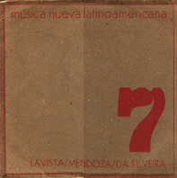

Fanfarria es el primer movimiento de la pieza "Sexteto".
Ver también "Secretos"
Partitura
PDF ArteMus,
Caracas.
Distinciones
Grabación

Tres Composiciones
Instrumentales - Nueva Música Latinoamericana Nº 7.
(LP 33.3 rpm). Montevideo: Edición Tacuabé (T/E 13), 1981.

CD: Mundos -
Emilio Mendoza. Caracas: ArteMus, 1998.
Fanfarria junto a Secretos, que forman parte del Sexteto, fue compuesta en 1979 en la residencia estudiantil de la Universität-Klinik en Düsseldorf, Alemania. Tuvo un estreno pésimo en la SIMC de Israel, sin ensayo, pero luego recibió el honor de ser producida por la West Deutsche Rundfunk (WDR) en Colonia, para una grabación con el Düsseldorfer Bläßersextet, dirigido por Alfredo Marcano, Estudio Nedeltschev, Colonia, 1981. Esta grabación se utilizó para la edición del disco Nº 7, Tacuabé, en la serie "Música Nueva Latinoamericana".
Es una pieza bien extraña. Su inicio forma parte de una fanfarria que el Prof. Becker nos pidió a todos componer para unos juegos deportivos en Düsseldorf y la mía no quedó seleccionada. La incorporé a La Caja de Juguetes y luego le seguí dando vueltas hasta hacer esta pieza completa y continuando con su segundo movimiento, Secretos. Jugué con la armonía como timbre, con los timbres de unísonos y octavas en diferentes instrumentos y con el lenguaje de sonidos largos con crescendo y decrescendo, enamorado de los sonidos de alturas, ni disonantes ni tonales, simplemente como timbres.